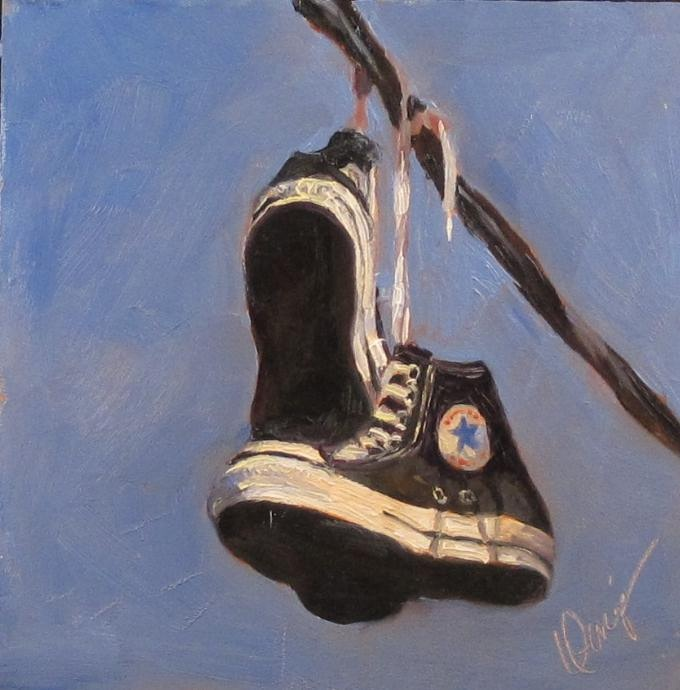

a.j.jr

"Once upon a time, you dressed so fine; you threw the bums a dime, didn't you?"
"O, the times, they are a changin'."
There must be 82 million of you out there we could close the New York State Freeway again if we wanted! Baby Boomers have reached middle age and beyond. Take a look back at how we were going to change the world: or, how the world around us has changed. Whatever happened to those paisley bell bottoms you had? Did anyone write better poetry than Dylan or the artists of Motown? How has fast food become the restaurant of choice?